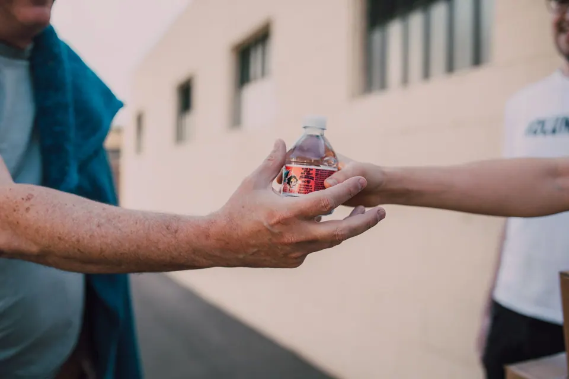

This week · November 2 to 8
This week’s lessons, ready to project.
Open a lesson and press Teach it now. Your board fills with photos, timelines and questions your class can answer. No prep, nothing to download.
Teach this week
Open a lesson, press Teach it now, and run it from the page. No prep and no download.

Nov 13World Kindness DaySort polite from kind, then plan two small kindnesses you can do at school this week.What teachers are asking this month
Short, practical answers to the questions that come up at this point in the school year.
- How to Run Parent Teacher Conferences: Agenda, Scripts and TemplatesA parent teacher conference runs well when three things were settled before the family sat down: what the family wants to talk about, the evidence in the folder, and the next step both sides will leave with.
- How to Write Report Card Comments: A Formula and 80 Comments to CopyA report card comment that families can use does three things: it names something the child does well and shows the evidence, it names one thing to work on in words a parent would use, and it gives a next step small enough to start this week.
Teacher to Teacher
How working teachers run the routines, credited to them by name.
First Day of Spanish Class: Routines and Procedures That Hold
On the first day of Spanish class, four of the five teachers whose posts come up first teach no procedures at all.
Read itHow to Get Students Speaking Spanish in Class
Students speak Spanish when saying something is easier than not saying it.
Read itHow to Organize Student Papers in the Classroom
Student papers stop going missing when every sheet has exactly one place to land, and one person whose job it is to move it.
Read itFree printables to download
Each one opens on Teachers Pay Teachers, where the file lives. A free TPT account is needed to download.
 Free fileUNO Math Games SamplerA free 28-card Math Monsters sampler, a UNO-style game where each colored card shows…
Free fileUNO Math Games SamplerA free 28-card Math Monsters sampler, a UNO-style game where each colored card shows…
 Free fileMini Class List Lanyard EditableAn editable mini class list sized for a badge pouch on your lanyard, plus…
Free fileMini Class List Lanyard EditableAn editable mini class list sized for a badge pouch on your lanyard, plus…
 Free fileBack to School Icebreaker Games SamplerA four-page print-and-play icebreaker sampler with one Human Bingo (Find Someone Who)…
Free fileBack to School Icebreaker Games SamplerA four-page print-and-play icebreaker sampler with one Human Bingo (Find Someone Who)…
 Free fileKissing Hand Poem PrintableA first-day-of-school poem keepsake with four parts: the poem, a handprint keepsake page…
Free fileKissing Hand Poem PrintableA first-day-of-school poem keepsake with four parts: the poem, a handprint keepsake page…
 Free fileTodo Sobre MíTwo editable all about me worksheets in Spanish: Todo Sobre Mí has six sentence starters…
Free fileTodo Sobre MíTwo editable all about me worksheets in Spanish: Todo Sobre Mí has six sentence starters…
 Free fileAI Classroom Policy TemplateA one-slide editable AI classroom policy poster, plus a four-page printable PDF.
Free fileAI Classroom Policy TemplateA one-slide editable AI classroom policy poster, plus a four-page printable PDF.
 Free fileAll About Me BagA 9-page editable set for an all about me bag project, where each child fills a bag…
Free fileAll About Me BagA 9-page editable set for an all about me bag project, where each child fills a bag…
 Free file$100,000 Pyramid Classroom GameA vocabulary game in the style of the TV show Pyramid: one partner describes each word…
Free file$100,000 Pyramid Classroom GameA vocabulary game in the style of the TV show Pyramid: one partner describes each word…